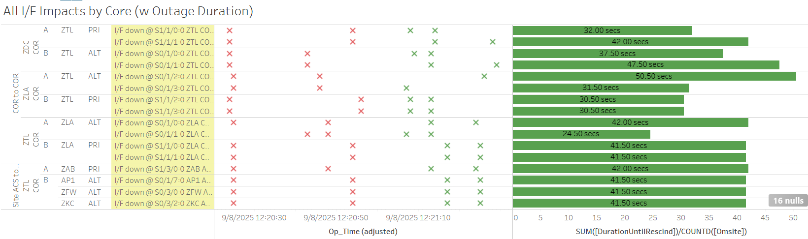
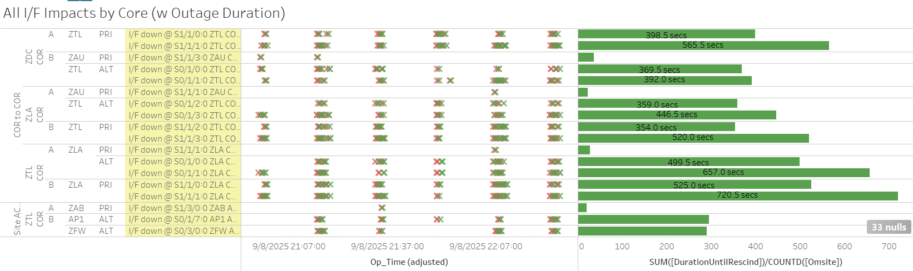
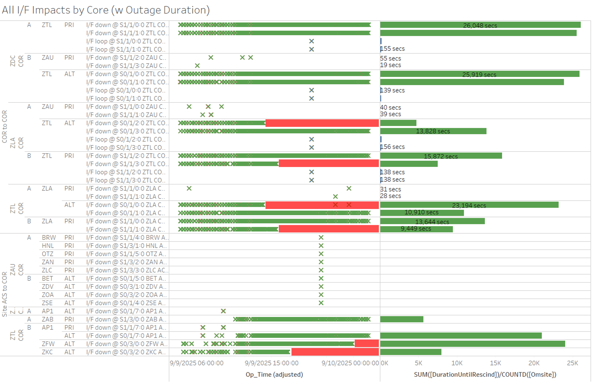
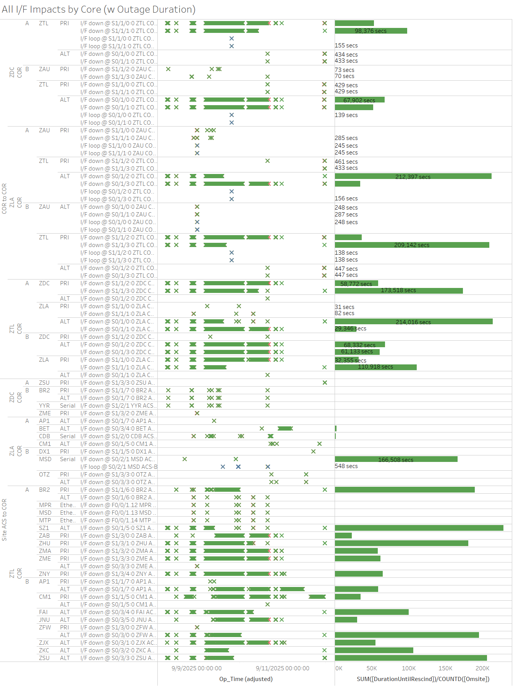
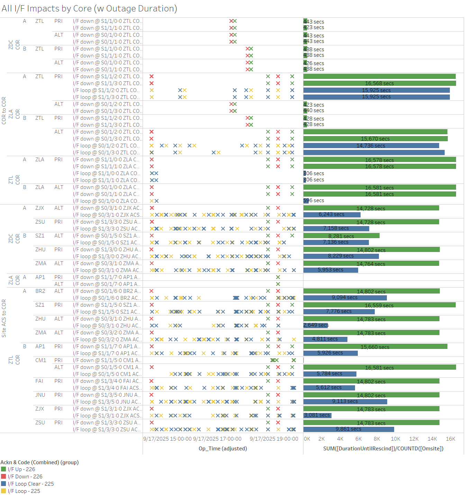

Weekly Highlights 20250910-20250917
9/8 - ZTL Core Comm Issues (Fiber Cut)
ISR 0909-1456 Multiple lines from ZTL bouncing. FTI RPTS Vandalism FIBER cut
-- ref LAD
1053459524...
- 9/8 07:19 - Comm event impacting both network rings at ZTL -- intermittent ~60 second bounces for COR-COR circuits over the course the 0700 hour with last event clearing at 9/8 07:58 (~231 seconds max)

- 9/8 12:20 - Same comms on both network rings previously impacted by comm event at ZTL bounced again lasting <60 seconds

- 9/8 20:57 - Comm event impacting both network rings at ZTL -- intermittent ~60 second bounces for COR-COR circuits; last events cleared at 9/8 22:29 (~657 seconds total)

- 9/9 04:53 - Comm event impacting both network
rings at ZTL -- intermittent ~20-40 second
bounces for COR-COR circuits;
ISR 0909-1456 Multiple lines from ZTL bouncing.-- ref LAD 1053459524...- 9/9 10:57 - ZAB Ring 1 PRI to ZTL comms flapping...
- 9/9 14:00 - ZLA-ZTL Ring 1 ALT (ZLA S0/1/2:0 / ZTL S0/1/0:0) comms down hard...
- 9/9 15:28 - ZLA-ZTL Ring 2 PRI (ZLA S1/1/3:0 / ZTL S1/1/1:0) comms down hard...
- 9/9 16:46 - ZKC Ring 2 ALT (to ZTL COR-B) comms down hard...
- 9/9 23:52 - ZFW Ring 2 ALT (to ZTL COR-B) comms down hard...
- 9/10 01:38 - ZLA-ZTL Ring 1 ALT (ZLA S0/1/3:0 / ZTL S0/1/1:0) / Ring 2 PRI (ZLA S1/1/2:0 / ZTL S1/1/0:0) comms cleared (~15872 seconds total)
- 9/10 01:39 - ZTL-ZDC Ring 1 PRI / Ring 2 ALT comms cleared (~26048 seconds total)

- 9/10 04:45 - Comm event impacting both network
rings for ZTL to ZDC -- intermittent ~20-40
second bounces for COR-COR circuits;
FTI RPTS Vandalism FIBER cut-- ref LAD 1053459524...- 9/10 04:47 - ZLA-ZTL Ring 2 PRI (ZLA S1/1/2:0 / ZTL S1/1/0:0) comms flapping...
- 9/10 06:02 - ZLA-ZTL Ring 1 ALT (ZLA S0/1/3:0 / ZTL S0/1/1:0) comms flapping...
- 9/10 14:51 - AP1 Ring 2 ALT comms down hard; line back up to flapping at 9/10 15:37 (~2750 seconds)
- 9/10 14:55 - Core-Core comms + ZAB Ring 1 PRI start flapping down hard for extending periods; Core-Core lines cleared at 9/10 15:20 (~1500 seconds)
- 9/10 15:34 - ZTL C&V alarmed with SE 740 Time to Alarm (TTA) for all GEOs; G30 GEO automatically changed Selected Source CV from ZTL->ZLA
- 9/10 15:35 - SE 756 Message Type 0 for the ZTL C&V rescinding after ~6 seconds
- 9/10 16:09 - Core-Core comms + multiple sites comms down hard; lines came back up to flapping at 9/10 19:55 (~13585 seconds)
- 9/10 20:16 - Core-Core comms + multiple sites comms down hard again; lines cleared at 9/10 23:22 (~11151 seconds), but some comms still down and AP1 Ring 2 ALT still flapping...
- 9/11 23:18 - Remaining Ring 2 ZTL comms cleared (max ~200k seconds)
- 9/11 23:33 - Remaining Ring 1 ZTL comms cleared (max ~207k seconds)

- 9/15 13:49 - Change G30-135 Selected Source CV from ZLA->ZTL to restore split Selected Sources
9/11 - ZME WRE-B Fault
- 9/11 16:54 - ZME WRE-B Faulted with SE 54 Rcvr Comm Fault; Control Powered and restored to Normal at 9/11 17:54
9/15 - MTP Power Work
- 9/15 15:03 - MTP WREs to Maintenance and Shutdown
for planned power work to
replace power lines from the electrical substation to the WAAS station and replace UPS backup equipment-- ref LAD 1057398224
9/17 - ZDC C&V Fault
- 9/17 08:27 - ZDC C&V Faulted from Normal with SE 734 CV Degraded Fault; SM9 GEO automatically transitioned from ZDC->ZTL CV Selected Source; Reset ZDC CV Subsystem, Copied Warm Start, Restarted then Verified to Normal at 9/17 11:49
9/17 - Widespread Comm Outage
- 9/17 14:40 - Widespread comm outage affecting ZTL
and ZDC comms;
ISR 0917-0339 - higher level outage-- ref LIR 1164282332; circuits looped...- 9/17 17:29 - Operator Action to Reset ZTL COR-A; ZTL-ZDC Ring 1 PRI/ALT + ZTL-ZLA Ring 1 ALT comms down hard; lines cleared at 9/17 17:37 (~443 seconds)
- 9/17 18:03 - Operator Action to Reset ZTL COR-B; ZTL-ZDC Ring 2 PRI/ALT + ZTL-ZLA Ring 2 PRI comms down hard; lines cleared at 9/17 18:11 (~429 seconds)
- 9/17 18:46 - All looped comm lines cleared (~14783 seconds)
- 9/17 19:08 - All previous comms looped again; several lines cleared at 9/17 19:38 (~1789 seconds)
- 9/17 19:50 - Comms looped again;
lines cleared at 9/17 22:36
(~9941 seconds) -- SE
738 CV-GUS Comm Failed for AP1
- 9/17 23:12 - Comms looped again; lines cleared at 9/17 23:42 (~1798 seconds)

L1/L2 Bias Errors

Various Comm Impacts
* Only captures major / long-term comm outages
CM1 Comms
- 9/11 15:43 - CM1 Ring 2 PRI comms flapping; last event cleared at 9/11 22:51 (~3781 seconds total)
- 9/12 18:49 - CM1 Ring 1 ALT comms down hard; line cleared at 9/12 22:13 (~12289 seconds)
- 9/15 17:11 - CM1 Ring 2 PRI comms flapping; last event cleared at 9/15 23:17 (~978 seconds total)
- 9/16 16:09 - CM1 Ring 1 PRI comms flapping; last event cleared at 9/16 22:40 (~721 seconds total)
- 9/17 18:55 - CM1 Ring 2 PRI comms flapping (also affected by widespread comm outage above); last event cleared at 9/17 22:03 (~86 seconds)
Other Sites
- 9/9 08:54 - SZ1 Ring 1 ALT comms down hard; line cleared at 9/10 15:35 (~110437 seconds) then immediately down hard again; last event cleared at 9/11 23:33 (~144177 seconds)
- 9/10 13:00 - YQX Ring 1 comms down hard and looped back; line cleared at 9/12 17:38 (~189463 seconds)
- 9/10 16:49 - CDB Ring 1 comms flapping until down hard at 9/10 17:25; line cleared at 9/10 17:35 (~1593 seconds total)
- 9/10 17:34 - OTZ Ring 1 / Ring 2 comms down hard; all lines cleared at 9/10 17:37 (~165 seconds)
- 9/10 22:17 - BET Ring 1 ALT / Ring 2 PRI comms flapping; last event cleared at 9/10 23:53 (~467 seconds total)
- 9/12 18:02 - HNL Ring 1 ALT / Ring 2 PRI comms down hard; both lines cleared at 9/12 19:05 (~3800 seconds)
- 9/15 09:51 - Reset ZLA COR-B
- 9/15 10:17 - Reset POC OAC-B
- 9/16 17:34 - ZSU Ring 1 PRI / Ring 2 ALT comms flapping; last event cleared at 9/16 18:21 (~1524 seconds total)
- 9/17 03:47 - CDB Ring 2 comms flapping; last event cleared at 9/17 03:55 (~211 seconds total)
- 9/17 04:07 - ZLA-POC COR-OAC Ring 1 PRI / Ring 2
ALT comms down hard;
ISR 0917-0480/0481 ZLA WCNS<->SCT POC Net1 PRI and Net2 ALT OTS-- ref LIR 1058403124; lines cleared at 9/17 06:48 (~9632 seconds) - 9/17 06:18 - CDB Ring 2 comms flapping; last event cleared at 9/17 06:22 (~170 seconds total)
- 9/17 09:46 - ZLA-POC COR-OAC Ring 1 PRI / Ring 2 ALT comms down hard; lines cleared at 9/17 09:48 (~129 seconds)
- 9/17 20:38 - CDB Ring 2 comms flapping; last event cleared at 9/17 22:00 (~1145 seconds total)
7/21/25 YYR Ring 1 Comms
- 7/21 11:44 - YYR Ring 1 comms flapping with extended outages... -- ref LIR 1020579524
- 7/21 14:50 - YYR Ring 1 comms down hard...
- 7/30 -
SATCOM issue YYR<->QWE. YYR tech found broke cable connector on back of receive modem. researching part. - 8/20 Remark: Noted increase of L1/L2 Bias Errors for YYR and frequent flaps to No Data Reported...
11/6/24 YFB Ring 2 Down Hard...
YFB requires satcom upgrades by NavCanada to restore... ref LIR 892056924
- 11/6/24 18:48 - YFB Ring 2 down hard... both rings to YFB down hard...
5/11/23 Mexico Ring 2 Down Hard...
- 5/11/23 17:01 - MX Ring 2 SatCom upgrade begins; MX Ring 2 OFFLINE until upgrade troubleshooting is complete...
- Targeting network upgrade in CY26
List of current offline WREs
List of current offline WREs -- ref WAAS Status Monitor
All Depot shipments to Mexico are halted until the customs process can be finalized
Currently working to assess MX Inventory to determine equipment refresh and restoration needs...
- MMD WRE-A - 3/31/25-... - Freq Std failed -- ref LIR 953873324
- MTP WRE-B - 11/18/24-... - Receiver inits failing -- ref LIR 898330924
- MMX WRE-A - 10/13/24-... - Freq Std failed -- ref LAD 879853824
- MPR WRE-B - 5/3/24-... - Inits failing -- looks like a bad freq std; due to shipping issues, there is no spare Freq Std and no ETA to recover WRE-B... -- ref LIR 44170821

Major Events


Core I/F Status

Comm Events

Mexico Comm Status